| Aves | Reptiles | Mamiferos | Anfibios | Peces |
| 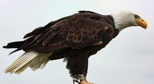 | 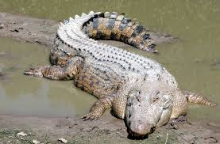 | 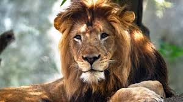 | 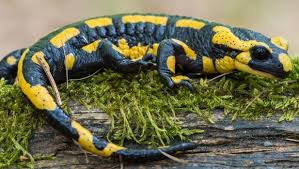 |  |
| Aguila | Cocodrilo | Leon | Salamandra | Pez mandarin |
| Aguila chrysaetos | Crocodylidae | Panthera leo | Caudata | Synchiropus splendidus |
| 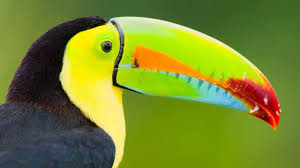 | 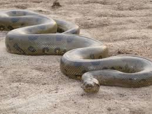 | 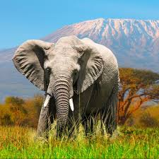 |  |
 |
| Tucan | Anaconda | Elefante | Sapo comun | Pez león |
| Ramphastidae | Eunectes murinus | Elephantidae | Bufo bufo | Pterois antennata |
| 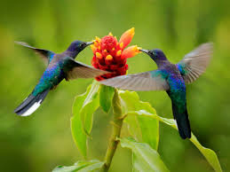 | 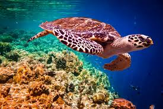 | 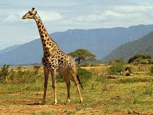 |  |
 |
| Colibri | Tortuga carey | Jirafa | Sapo Gigante | Pez payaso |
| Trochilidae | Eretmochelys imbricata | Giraffa camelopardalis | Rhinella marina | Pez payaso |
| 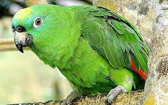 |  |
 |
 |
|
| Loro | Lagarto | Delfin | Rana Venenosa | Pez loro |
| Psittacoidea | Lacertilia | Delphinidae | Dendrobatidae | Scaridae |
 |
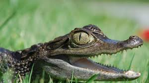 | 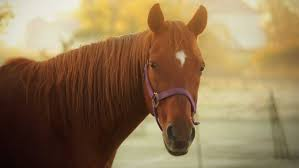 | 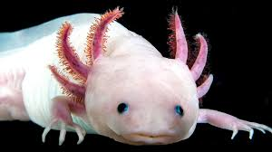 |  |
| Cardenal | Caiman | Caballo | ajolote | Pez idolo moro |
| Cardinalis cardinalis | Caiman crocodilus | Equus caballus | Ambystoma mexicanum | Zanclus cornutus |